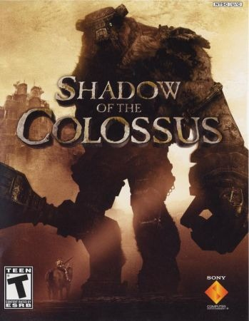

Sinopse
Shadow of the Colossus é um jogo de ação-aventura em que o jogador assume o papel de Wander, um jovem que tenta reviver uma garota chamada Mono, sacrificando-se para derrotar 16 colossos que habitam um vasto e desolado mundo. O jogo é conhecido por seu design minimalista, onde cada batalha contra um colosso é um evento único e grandioso.
Com uma narrativa comovente e um mundo belamente elaborado, o jogo desafia os jogadores a enfrentarem gigantescas criaturas em uma jornada repleta de significado e sacrifícios. A jogabilidade envolve exploração e uma intensa ação de combate, onde Wander deve escalar os colossos para atingir pontos vitais e derrotá-los.
Características Principais
- Batalhas épicas contra 16 gigantescos colossos
- Exploração de um vasto mundo aberto, quase desabitado
- Jogabilidade focada na escalada e exploração vertical
- Gráficos impressionantes para a época, com um mundo imersivo
- Trilha sonora emotiva e envolvente, composta por Kow Otani
- História profunda e com temas de sacrifício e amor
Imagens Adicionais